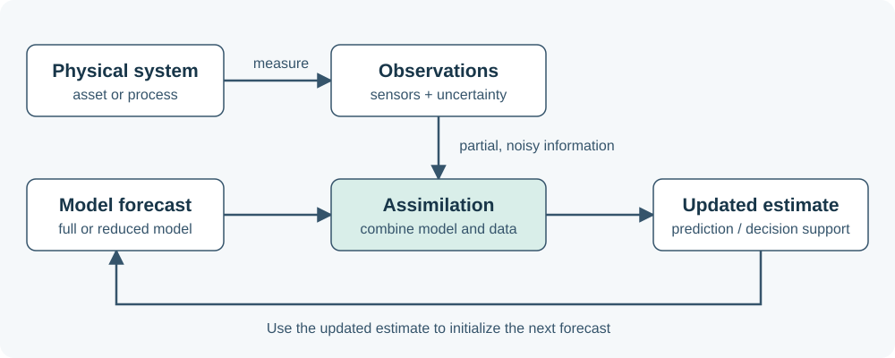

.pdf
.pdf
Digital twins: connecting models and observations
A useful numerical model answers a question about a physical system. A digital-twin setting adds observations of that system and a process for updating the digital representation as the system evolves.
Begin with a purpose
Consider a heated component monitored by a few temperature sensors. We want to estimate its temperature field, predict a quantity such as a peak temperature, and decide whether a proposed operating condition is acceptable. The sensors observe only part of the state; the model supplies information between sensors and supports predictions under changed conditions.
For this material, a digital twin is a digital representation associated with a physical system, informed by observations and used for a defined purpose such as monitoring, prediction or decision support. The required update frequency follows that purpose: a temperature-monitoring task and a long-term maintenance study need different time scales. State clearly which asset or process is represented and how its data influence the model.
| Question | Thermal example |
|---|---|
What is the physical system? |
A component exchanging heat with its surroundings. |
What do we observe? |
Temperatures at sensor locations or averages over sensor footprints. |
What do we need to infer? |
The temperature away from sensors, or an uncertain parameter. |
What do we predict? |
A future temperature or the response to a changed load. |
What decision is supported? |
Whether to adjust the load, inspect the component or request more information. |
What limits usefulness? |
Latency, noise, missing physics, uncertain parameters and approximation error. |
The model–observation loop

The numerical loop has three complementary roles:
-
Prediction: use a model and its assumptions to calculate a state or an output.
-
Observation: acquire partial information about the physical state, with an explicit measurement model.
-
Assimilation: combine predictions or a model-informed background with measurements to estimate the state.
An updated estimate can initialize the next forecast. Diagnostics compare the predictions with available observations and help identify where the model or its assumptions need attention. A control action may affect the physical system, but automated control is not required for every application.
The broader workflow also includes data acquisition, validation, storage, software deployment and domain expertise. Here we focus on the numerical methods that make the prediction-and-update loop useful.
A small model to explore
Our opening experiment uses a nondimensional, steady one-dimensional reaction–diffusion model:
The parameter \(\mu\) controls diffusion relative to the reaction term. The model is a small teaching example for thermal-like behavior; it is not a calibrated representation of an instrumented component. With \(n\) interior grid points, \(h=1/(n+1)\) and a central finite-difference discretization,
Here \(\mathbf{f}\) is the vector of ones and the boundary values are zero. For positive \(\mu\), the matrix is symmetric positive definite. One quantity of interest is the spatial mean, approximated by
This is the trapezoidal integral over the unit interval, including the zero boundary values. A sensor can sample a grid value or an average over several entries. Write measurements as
The operator \(H\) specifies what the sensors measure; \(\boldsymbol{\varepsilon}\) represents measurement error. The opening notebook creates synthetic observations from a declared simulation and adds seeded noise. Knowing this simulated truth lets us evaluate an experiment; operational measurements would not reveal the complete physical state.
Why reduction enters the picture
A small classroom system solves quickly. For a large discretization, repeated predictions over parameters, time steps or ensemble members can become expensive. We seek an approximation
The columns of \(Z\) span a reduced space. POD constructs a space from snapshots with a specified approximation objective. A reduced-basis greedy procedure selects new snapshots using an error indicator. Once a space is available, a Galerkin method determines reduced coefficients from the projected equations.
An offline stage performs reusable preparation; an online stage answers new queries. A small reduced system is only part of the efficiency story: evaluating coefficients, nonlinear terms, outputs and full-field reconstructions also has a cost. EIM and DEIM address expensive evaluations that otherwise remain tied to the full dimension.
Accuracy and measurements answer different questions
For the discrete symmetric positive-definite problem, a residual bound takes the form
This assesses the reduced approximation relative to the specified discrete full model. It does not automatically bound the difference between the model and the physical system. After approximating an operator or residual with hyper-reduction, account for that additional error before claiming a bound for the original problem.
Measurements address a complementary issue: the physical state may differ from what the chosen model predicts. GEIM reconstructs using general measurement functionals and a reduced representation. PBDW combines a model-informed background with a measurement-informed correction. Both require attention to the relation between the approximation space and the sensors: accurate approximation alone does not ensure stable recovery from sparse, noisy data.
For dynamics, write a forecast and observation model schematically as
The Kalman filter combines a forecast with observations using covariance information in a linear model. The ensemble Kalman filter uses an ensemble to approximate forecast uncertainty and can propagate members through nonlinear models. Using a ROM for each forecast can reduce ensemble propagation cost. Reduced state dimension and ensemble covariance rank are distinct choices. Covariance and ensemble spread depend on statistical assumptions; they are not deterministic RB error certificates.
Methods and the questions they serve
| Method | Question | Diagnostic to examine |
|---|---|---|
RB, greedy and POD |
Can a small space represent the states of interest? |
Projection/test error and basis size. |
A posteriori estimation |
How accurate is the reduced solution relative to the chosen model? |
Error bound and effectivity where truth is available. |
EIM and DEIM |
Can expensive terms be evaluated from fewer samples? |
Approximation error and actual online cost. |
GEIM and PBDW |
What can observations tell us about the state? |
Sensor stability, reconstruction error and noise sensitivity. |
KF and EnKF |
How do estimates improve as observations arrive? |
Forecast/analysis error, innovations and uncertainty diagnostics. |
These methods serve different parts of the workflow. Choose comparisons that match their purpose rather than expecting one method to replace every other method.
Try it and discuss
Open the first integrated course session to explore the model in a notebook. Before discussing algorithms, identify the output, the observation operator and the source of uncertainty. After the experiment, explain which parts of the model–observation loop have been implemented and which remain to be built.
Source and further reading
These introductory notes adapt the digital-twin, inference-cycle and model/data themes in Christophe Prud’homme’s rbm/Slides/rbm/course-rom-outline.tex, with a new worked introduction based on the repository’s tiny RB lab.
They are a selected native-web unit, not a complete conversion of the original slide collection.
The 2024 introductory slides remain available as a historical companion.
Full proofs and algorithmic details are developed in the subsequent course units.